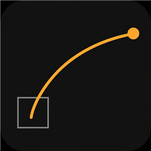

CurveLoupe
made by sinj0x7
This started because a friend of mine was losing time in DaVinci Resolve. Not on the edit — on the graphs. Fusion’s spline editor is so small that shaping a simple ease means zooming in, missing the handle, zooming out, and doing it again. I built CurveLoupe so he could grab the curve on a big canvas and send it straight back into his comp.
Then I figured other people were probably fighting the same thing, so here it is. Free. MIT. Use it however you want.
download CurveLoupe16 KB zip · Resolve 17+ / Fusion 16+ · Windows, macOS, Linux
this is the idea — drag the two round handles
linear · ease-in-out · ease-in 100% · overshoot · anticipate
In Resolve it also loads the selected tool’s spline, lets you pick which keyframe pair to edit, and writes the result back as one undo step.
install
- Unzip and keep the
curveloupefolder together. - Copy it into Fusion’s scripts folder:
windows %APPDATA%\Blackmagic Design\DaVinci Resolve\Support\Fusion\Scripts\Comp\ macos ~/Library/Application Support/Blackmagic Design/DaVinci Resolve/Fusion/Scripts/Comp/ linux ~/.local/share/DaVinciResolve/Fusion/Scripts/Comp/
- Restart Resolve. Windows also needs Python 3 for scripting.
- Fusion page → select an animated tool →
Workspace > Scripts > curveloupe > CurveLoupe